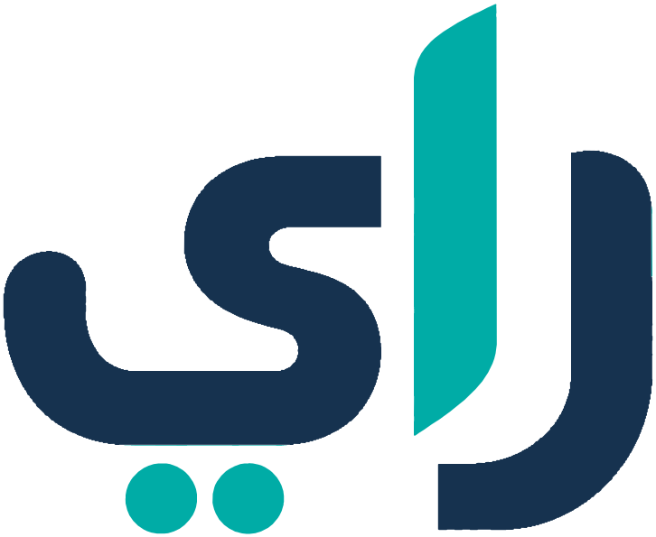

راي
متابعة واضحة، وإنجاز منظم
تطبيق لمتابعة الموضوعات الإدارية في الإدارة القانونية: الوارد، والتكليف، ومهل أيام العمل، والمراجعة والاعتماد، ونتيجة الدراسة.
Ray
Clear follow-up, organised delivery. Ray tracks administrative topics in a legal department: incoming items, assignment, working-day deadlines, review and approval, and the study result.